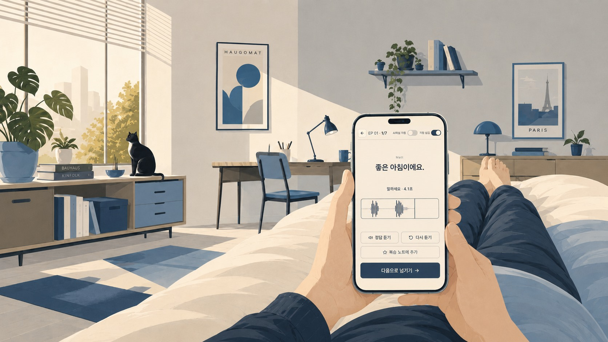
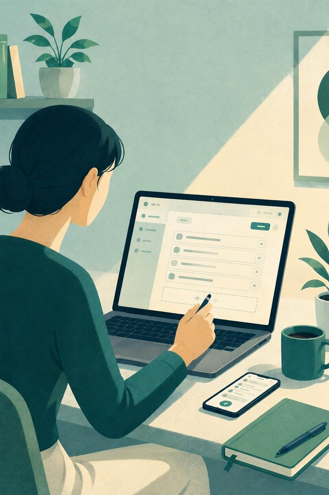
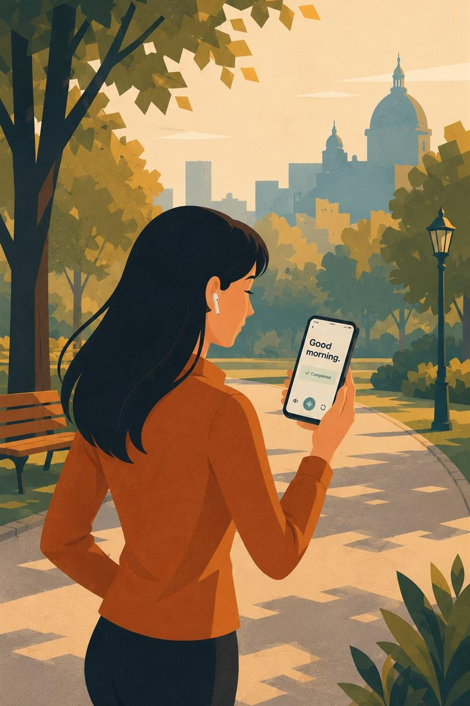
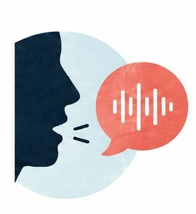
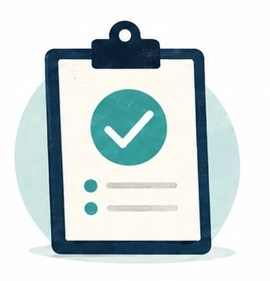
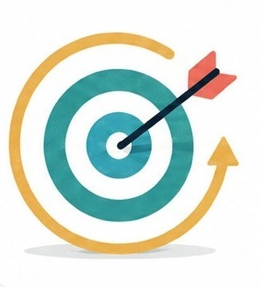
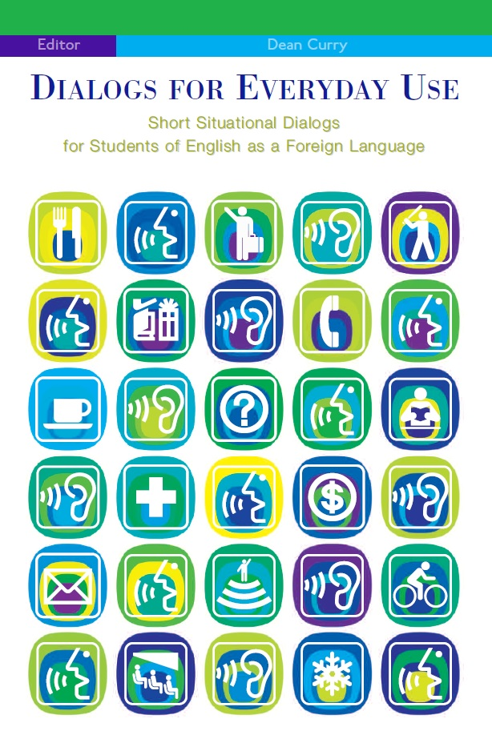
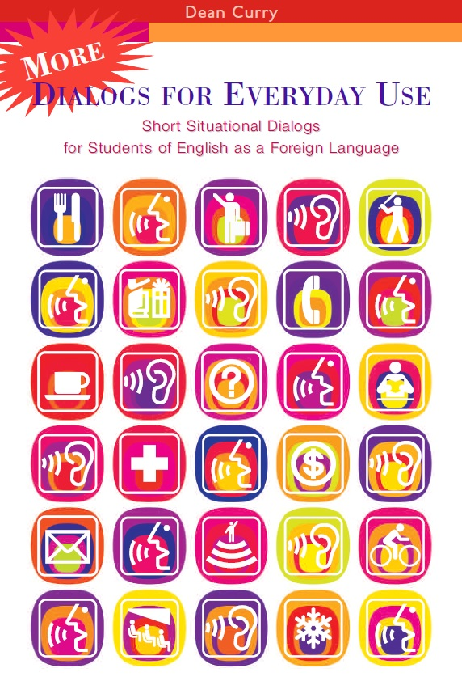
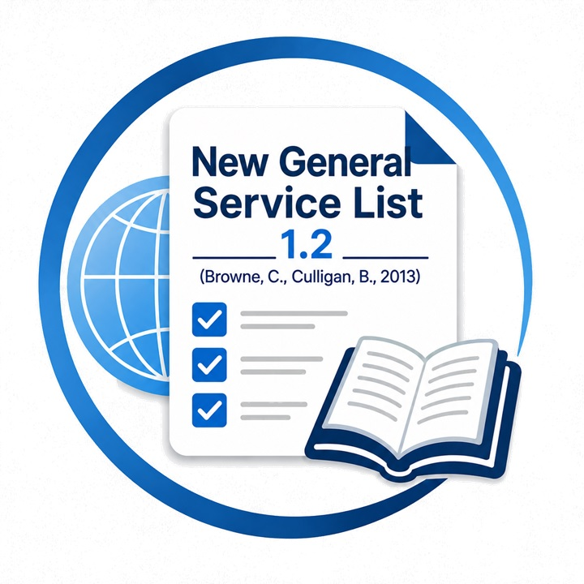
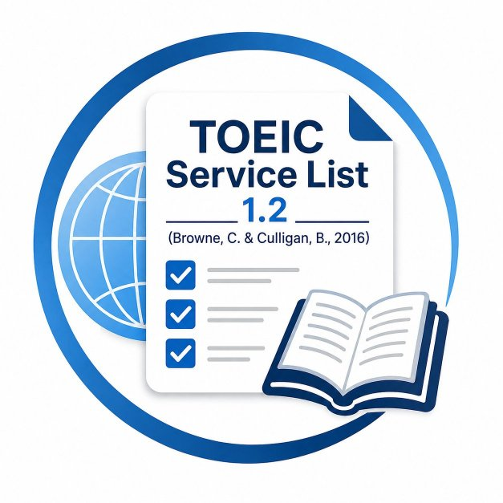

01시작하기
PC와 스마트폰에서
간편하게 시작하세요.

FROM MEMORY TO SPEECH
기억하고 싶은 문장과 표현을 모아두고,
간격 반복으로 다시 만나고, 직접 말하고 쓰며
실제로 익숙해질 때까지 반복합니다.
체험기간 동안 무료로 사용할 수 있습니다. 단, 2026년 10월경 예정된 유료화 이후 일부 기능에 한해 포인트 구매가 필요합니다.
HOW IT BECOMES YOURS
어디서든 시작해 원하는 표현을 담고, 내 것이 될 때까지 연습합니다.
PC와 스마트폰에서
간편하게 시작하세요.

배우고 싶은 영어 단어나 문장을
직접 담으세요.

말하고 쓰고 반복하며
내 표현으로 만드세요.
어디서든 시작하고, 원하는 표현을 담아, 내 것이 될 때까지 반복합니다.
핵심 기능 자세히 보기CORE FEATURES
표현을 정리하는 순간부터 쓰고 말하며 익히는 과정까지 한곳에서 이어집니다.
내가 모은 문장과 표현을
학습 목록으로 저장하고 정리합니다.

음성 인식으로 직접 말하며
영어 표현을 입에 익힙니다.
뜻을 보고 영어 문장을 써보며
정확하게 기억합니다.

말하기와 쓰기 결과를 확인하고
바로 피드백을 받습니다.
틀린 부분을 쉽게 이해하고
자연스러운 표현까지 확인합니다.

자주 틀리는 표현은 더 자주,
익숙한 표현은 간격을 넓혀 복습합니다.
학습 기록과 정답률을 통해
나의 학습 상태를 확인합니다.
별도의 설치 없이 PC와 스마트폰의
웹 브라우저에서 학습합니다.
VERIFIED LEARNING CONTENT
가입 후 홈페이지 [학습 콘텐츠] 메뉴에서 무료로 내려받아 바로 학습할 수 있습니다.
실생활 상황과 인물의 생각을 이해하고, 그 순간의 영어를 직접 말해봅니다.

더 다양한 상황 중심 대화로 자연스러운 영어 표현을 연습합니다.

2억 7천만 낱말 코퍼스를 분석해 선별한 어휘로, 일반 영어 텍스트의 92%를 커버합니다.

TOEIC 자료 150만 낱말 코퍼스를 분석해 선별한 1,200 낱말. NGSL과 함께 학습하면 TOEIC 읽기·듣기 지문의 최대 99%를 커버합니다.

어휘 커버리지 수치는 NGSL·TSL 공개 자료(Browne, C., Culligan, B. & Phillips, J.)를 따르며, TSL은 TOEIC 학습·기출 대비 자료 코퍼스를 기준으로 합니다.
WHO IT'S FOR
영어 표현을 배워도 금방 잊어버리는 분
말하기와 쓰기를 함께 반복하며 영어를 익히고 싶은 분
머리로는 아는데, 막상 영어로 말하려면 막히는 분
틀린 표현을 바로 교정받고 같은 실수를 줄이고 싶은 분
내게 필요한 문장과 표현을 모아두고 싶은 분
아는 영어를 실제로 쓸 수 있는 영어로 만들고 싶은 분
FROM MEMORY TO SPEECH